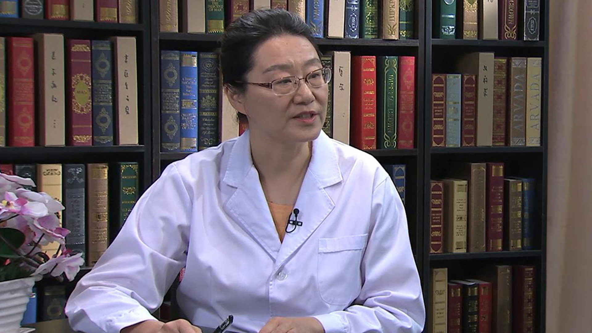

2.1 矮小症¶
李辉 主任医师¶

首都儿科研究所生长发育研究室主任 博士生导师；
中华医学会儿科学分会内分泌遗传代谢学组委员；中华预防医学会儿童保健分会儿童生长发育营养学组副组长；中国医师协会青春期医学专业委员会常委；中国优生科学学会理事；中国优生优育协会儿童发育专业委员会委员；中国优生优育协会小儿营养专业委员会委员；北京医学会早产与早产儿分会委员。
主要成就： 发表中英文研究论文80余篇，其中英文12篇；主持研究制定中国0-18岁儿童生长标准及生长曲线，以第一完成人获得“第六届宋庆龄儿科医学奖”及“首届全国妇幼健康科技成果奖”。
专业特长： 从事儿童生长发育研究及相关临床工作30余年，擅长儿童体格生长和智力发育的评价与促进、儿童保健及科学育儿指导、生长发育偏离/生长发育异常的诊断及干预治疗等。
如何定义“矮小症”？¶
如何定义“矮小症”？
矮小症主要是指身高，按照同年龄、同性别、同种族的孩子，他的正常标准，如果这个身高低于正常标准的第三百分位，或者是两个标准差，我们就说这个孩子身材矮小了。
也就是说在一个正常的人群中，按照统计学计算的话，大概有2.3%-3%的人，这个身高是处于矮小状态的，如果我们对着成年来说，就大概男性在中国人是一米六零，女性是一米五零，如果低于这个值也属于矮小了。
从流行病学角度来说因为我们国家，而且在世界范围内，其实也没有太明确的人群中的流行病学调查，大致从统计学按照我们的标准来计算，大概差不多3%的人群，那么如果说在营养不好的人群里头，就是说营养状况还不是很好的地方，落后的地区，比如像咱们的农村地区，贫困地区，这个矮小的发生率就会更高一些。
世界卫生组织在2012年的时候曾经做过一个公告，就是说在2001年的时候，全球五岁以下的生长迟缓，矮小发生率，大概全球有1.7亿人，所以他们希望到2025年，要把这个矮小的人群从1.7亿降到1.1亿。
所以从这个状况来看，我们（国家）人群中矮小的发生率还是挺高的，总体的基数还是挺大的。
矮小症和侏儒症是一回事吗？¶
矮小症和侏儒症是一回事吗？
理论上来说它是有区别的，矮小症主要是指身高，按照同年龄、同性别、同种族的孩子，他的正常标准如果这个身高低于正常标准的第三百分位，或者是两个标准差，我们就说这个孩子身材矮小了。
也就是说在一个正常的人群中，按照统计学计算的话，大概有2.3%-3%的人，这个身高是处于矮小状态的，如果我们对着成年来说，就大概男性在中国人是一米六零，女性是一米五零，如果低于这个值，也属于矮小了。
我们只是说他是一种状态，就是他的身高低于我们正常标准的最低限了，但是这些人他不一定都有疾病，只能是说他的身高处于一个不正常的状态。
侏儒症一般来说都是有疾病造成的，而且是明显的矮的，大概成年身高要低于一米二，比如说我们看到的常见的，相对常见的生长激素的缺乏症，还有像软骨发育不全这样的我们在人群中，大家能看见的。
再有一个我认为侏儒还带有一点歧视的，这样的一种含义在里边，所以我们现在一般不讲叫侏儒症，矮小我们根据原因病因来区分，比如说他是生长激素缺乏造成的矮小症，还是由于骨和软骨的发育障碍造成的，我们都以这样的特定的名词，来命名各种引起矮小的疾病。
造成矮小症的原因有哪些？¶
造成矮小症的原因有哪些？
矮小其实原因很多的，也很复杂的，在一个矮小的人群里头，其实我们大概60%-80%的人，到目前为止我们搞不清楚原因，搞不清楚就是找不着他的病因是什么。
就是他看上去除了身材矮以外，他没有任何的症状，就是说没有其它的病理的因素存在，生长速度也是正常的，骨龄也是正常的，身体也是健康的，没有疾病。还有大概20%-40%的，可能是由于疾病造成的。
我们根据他的生长速度是不是正常，或者根据他身体的比例是不是异常，我们可以把他分类，如果说我们按照病因的分类，我们可以看到有内分泌疾病，是一大类的，比如说生长激素的缺乏，甲状腺功能的低下，还有性早熟，还有多垂体的激素的缺乏，引起的这种功能低下。还有像肾上腺的一些问题，这样内分泌的疾病，可以使这个身高矮小。
还有像染色体的疾病，比如我们最常见的就是唐氏综合征，还有女孩特有的先天性的卵巢功能发育不全，我们又叫Turner综合征，还有一种就是孩子长的又矮又胖，智力还不行，性发育还落后的，我们叫Prader-Willi综合征，这样一类是由染色体疾病造成的矮小。
还有像骨和软骨的发育障碍，比如说我们说的软骨发育不全，骨发育不全，干骺端发育不全等等，这一大类的骨骼系统的疾病，会引起身材矮小。
还有像全身性的一些疾病，比如说我们的任何的慢性疾病，长期的慢性疾病，最后都可以造成生长迟缓，最终导致身材矮小。
像先天性心脏病、肾脏的疾病、消化系统的疾病，比如说长期的腹泻，营养性的疾病，长期的营养不良，慢性的贫血等等这些，任何系统的长期的慢性的疾病，最终对儿童来讲，都会影响他的生长发育，造成矮小。
还有像一些就是宫内发育迟缓，就是生下来的孩子，体重低于两千五百克，可以是早产的低体重儿，也可以是足月的小样儿，这样的孩子也可以造成日后的体格的矮小。
还有像我们说的叫精神社会性矮小，由于他的精神方面的因素，情绪的障碍等等，会影响到孩子生长速度减慢，时间长了以后也可以造成身材矮小。
还有像我们常见的家族性的矮小，遗传的家族性的矮小，还有咱们通常说的晚长的，叫体质性发育延迟。像家族性的矮小，体质性的发育延迟，还有我们都搞不清楚原因的，但是找不着疾病的，我们都可以把它现在归类为叫特发性矮小。
还有合并有一些畸形的，比如说身高也是矮的，他可能还有其它的畸形，比如说骨骼有畸形，或者智力发育障碍，有先心（病），有肾脏的异常等等，这样的一些，种类比较多的，就是说除了矮小以外，还有其它的异常的，常常是一种叫生长障碍的综合征，或者还有遗传性的疾病，我们说遗传代谢性疾病这些，所以说矮小的原因太多了，错综复杂。
精神因素也会造成孩子得矮小症吗？¶
精神因素也会造成孩子会得矮小症吗？
情感遮断性的矮小，我们也叫精神社会性的矮小，主要是由于比如说你的生活环境，家庭环境的不良，对孩子精神上面造成的伤害。
比如说家庭的不和睦，父母的离异，或者是对孩子比如有虐待、忽视等等这样的一些，造成了孩子精神不愉快，抑郁，会影响到他的情绪的中枢，情绪障碍以后，会影响到下丘脑的功能的改变。
下丘脑是调节垂体分泌生长激素的，如果这个功能紊乱了以后，生长激素的分泌就会受到影响，就会生长激素的分泌减少，就可以生长速度下降，导致身材矮小。如果说这种因素去除了以后，他的生长速度就会加快了，身高就会慢慢的恢复正常。
家长如何早期发现孩子是否患有矮小症？¶
家长如何早期发现孩子是否患有矮小症？
这个非常重要这一点，我觉得也是家长应该掌握的，首先就是说如果说一个孩子明显的矮了，比同龄孩子明显的矮了，很容易发现，跟同龄的孩子差距太大了，一旦说差距很大的时候，他已经不早了。
所以说我们想早期发现孩子有问题，一定要去从出生以后，就要去观察孩子的生长速度，你要知道这个孩子的生长速度是不是正常。
比如说这个孩子生长速度他下降了，他的生长的水平就会慢慢降低，你比如说我们生长激素缺乏，甲状腺功能低下等等，在疾病的早期，他不会说这个孩子就一下子就比同龄人矮很多了，他是一个慢慢的过程，慢慢的生长曲线下降了。
所以说我们希望从家长来讲，应该从小的时候，就应该拿一个这样的生长曲线图，就这样的一个生长曲线图，这个生长曲线图就是说，它把一个孩子正常的生长发育规律画在这个曲线图上了，同时他把这个身高的标准也画在曲线图上了。
我们矮小就是说这个身高是低到这个正常最低限以下了，就不正常了，如果这个孩子在早期，他还在线里边，可是他的生长曲线逐渐的变平下降了，这就说明这个孩子生长要出问题了，这时候家长就要警惕了，及时的去就医，就有可能发现一些疾病，潜在的疾病，这样及时治疗，这个身高就不会很矮了。
如果说一旦这个身高很矮了，我们没有及时发现，持续时间很长的话，对他的身高的影响，有的时候如果治疗晚了，可能还恢复不了了，不能完全恢复到他遗传确定的身高范围了，所以说家长一定要去密切的监测孩子的生长的变化。
一般来讲我们建议就从出生以后，如果你有条件的话，至少每三个月，给孩子测量一次身高，一到三岁可能每半年测量一次身高，三岁以后可以每年测量一次身高，这是最基本的，就把它画在这个曲线图上，然后观察。
如果一旦这个生长曲线图变平了，或者下降了，就要及时的找专业医生去看，这样的话就能够及时早期的发现身高的这样的一个生长的迟缓，避免孩子以后发生身材矮小。
怀疑得了矮小症一般需要做哪些检查？¶
怀疑得了矮小症一般需要做哪些检查？
矮小是这样的，要到医院去，要专业的医生检查。首先我们需要进行详细的病史的询问，我们要知道这个孩子，那么他的身高的矮小是从什么时候发生的，他的每年能够长多少厘米，就是生长速度，所以我们为什么说我们自己要去监测，这样才能给医生提供，我们从小到大的这样的一个生长的记录。
还要告诉医生，就是说我们这个孩子生下来有没有问题，比如说他是不是出生体重，出生身长，是不是小于胎龄儿，是不是早产的低出生体重儿，我们能够知道，再有我们要知道出生的时候有没有异常。
比如说出生的时候有难产，有窒息，或者有臀位，那么这样的话，他容易对脑造成损伤，比如说我们的生长激素缺乏，就有可能是这样原因造成的，还要看他的发育史，就是说在整个的这样的生长发育过程中，特别是早期的婴幼儿的喂养，他的喂养的状况是什么，他以前有没有各种疾病等等，这些详细的病史要告诉医生。
同时我们要知道他的父母的遗传身高，就知道爸爸妈妈身高是多少，爷爷奶奶这样的祖辈的这样家族中的身高，身高的这样的一些情况，这样的详细的这种病史的询问是很重要的，可以给医生找到诊断的思路，大概会是什么样的情况。
我们要做体格检查，我们要测量他的身高、体重，要知道他的身体比例是不是匀称的，看他的外观有没有什么特征，因为有一些疾病是有外观是有特征的，比如说眼距宽、鼻梁塌、有乳距宽、盾状胸等等，很多的这样的一些临床的这种征象，会给我们医生提供一些诊断的线索。
如果一个孩子经过医生的检查，生长速度也是正常的，我们体格检查也没有什么异常的发现，有些孩子可能我们就不用再做什么其它检查了，就可以继续的观察，我们认为他可能暂时没有问题。
如果这个孩子身高肯定是异常的，他的生长速度，也是正常的，也没有其它的一些可疑的一些疾病的表现，我们也可以继续再观察，或者给他一些咨询指导，比如他在生活制度上、营养上、睡眠上，可能还有一些什么缺陷，我们就可以给他进行一些指导，再去观察。
大一点的孩子，我们可以先做骨龄看一看，因为骨龄是反映成熟度的一个很重要的指标，我们看看他是不是真的是矮了，所以我们要看看骨龄。
如果说这个孩子，我们经过医生的最基本的检查以后，认为这个孩子还需要进一步的检查，比如他的生长速度不正常，还有其它异常表现，我们可能要做一些特殊的检查，比如说我们要做血的常规，要做血的全套的生化，主要是肝肾功能的检查，电解质等等这些检查。
有一些孩子我们怀疑他是不是内分泌有问题的，我们要做内分泌的检查，比如要测甲状腺功能，要做肾上激素的测定，有些孩子可能可以做一个简单的筛查试验，就是简单的抽两次血的，还有就是说明显的矮的，我们可能需要做诊断试验，叫刺激试验，就诊断的次数就比较多了，抽血的次数就比较多了，要用两种不同的药物，半小时抽血一次，这样子来做。常常这样的这种试验，可能需要住院，就是一两天来到医院住院以后再做这样的检查。
当然还有其它的问题，我们可能还需要做肾上腺的这样的一些检查，有一些孩子，还需要做染色体检查，特别是女孩矮小的，我们要除外她有没有先天性的卵巢功能发育不全，这个疾病在女孩中，她的发生率还是比较高的，大概1/2500-1/5000，她是有一条X染色体是缺失了，或者是有变异了，我们需要做相关的染色体检查。
还有一些孩子，比如说我们怀疑有遗传代谢病，我们可能做相关的一些疾病的筛查，做这样的一个检查，那么最近精准医学的发展，就是说因为有一些，我们可能做了一些这样的检查，还不能确定一些问题，可能我们可以通过基因的这样的一些测序诊断，当然这是一个逐步的过程，就是说我们需要从最基本的检查，逐步的逐步的进行，那么目的就是搞清楚它的原因，才能有针对性的治疗。
低于标准身高的最下限就是矮小症吗？¶
低于标准身高的最下限就是矮小症吗？
矮小症主要是指身高，按照同年龄、同性别、同种族的孩子，他的正常标准，如果这个身高低于正常标准的第三百分位，或者是两个标准差，我们就说这个孩子身材矮小了。
也就是说在一个正常的人群中，按照统计学计算的话，大概有2.3%-3%的人，这个身高是处于矮小状态的，如果我们对着成年来说，就大概男性在中国人是一米六零，女性是一米五零，如果低于这个值也属于矮小了。
其实我们用统计学的方法，比如说身高的测定，就是说我们看看这个身高是不是低于我们正常标准的最下限，如果说是下限了，那他就属于身材矮小了，这个身材矮小我们要去判断，他是正常的变异，他还是有疾病，一般来说，矮的越多的有疾病的可能性越大。
比如说他可能身高就在这附近，就是在第三百分位附近，生长速度也正常，那可能就没有什么问题。也可能比如说父母也矮的，父母的线也在第三百分位线，那肯定就跟遗传有关，就没有什么问题了，我们就能够确定了。
只有是说明显的矮小的，那我们要去找原因，就是矮小症它是有很多很多这样的疾病造成的，比如说他是生长激素缺乏，还是甲状腺功能低下，还是染色体疾病，还是遗传代谢病，还是由于慢性疾病造成的，我们进行相应的这样的一些病因诊断，我们才能够确定矮小的原因是什么。
如何区分孩子是矮小症还是长个儿晚？¶
如何区分孩子是矮小症还是长个儿晚？
其实在矮小里头，孩子一矮了，很多我们民间也传，这肯定是晚长，23岁还蹿一蹿呢，所以说这个观念可能是影响很多的家长，就会耽误了早期的诊断和早期的治疗。在临床上看到很多的孩子，等到不长了家长才来看病，为什么，就觉得我们以前也矮，但是就是说亲戚朋友，街坊四邻都说不着急，晚长，所以说这是不科学的。
我们一定要去用科学的方法判断，你是真的有病，还是因为生理性这样晚长造成的，一般晚长他是有特点的，就是说一般这样的孩子他生下来是正常的，出生体重和身长都是正常的，他的生长缓慢大概是在生后的六个月，有些孩子是六个月开始，多数就是一到两岁这个阶段，他生长变慢了，生长速度下降了，长少了，到三岁以后，他又恢复正常了，那时候他的身高就落的比较低的位置了，他的生长速度以后是正常的。
通过各种检查，我们查不出来他有问题，他的内分泌功能，他的这些都正常的，只是骨龄落后了，骨龄可能落后两岁或两岁以上了。
当然往往这样的孩子，也有一些遗传的特征，就是说他父母可能也是晚长的，比如说我们问家长，爸爸也可能长得比较晚，比如说我们十五六岁才开始猛长，比如说参军了，上大学了，工作了还长了，妈妈可能也是晚长的，比如我们十五六岁，十六七岁才来月经这样的，可能会有这样的一些家族史，可能供我们参考。
这样的晚长的孩子，这种诊断是一种排它性的诊断，我们必须把能够造成骨龄落后的一些疾病，排除了以后，我们才能确定这个孩子是晚长的。
如果晚长的孩子，我们就不用着急了，他可能就说生长速度是正常的，身高位于最低线，青春期的发育他也比同龄的孩子要晚一些，他停止的时间也会晚，最终的身高他会正常的，就会跟他的遗传身高相一致的。
矮小症能治疗吗？治疗效果怎么样？¶
矮小症能治疗吗？治疗效果怎么样？
矮小症有相当一部分，其实我们是可以治疗的，当然这跟原因有关。比如说像这个慢性疾病造成的，比如说有一些心脏病、肾脏病等等的，我们需要治疗原发病，我们把原发病治好了，去除了阻碍生长的因素。
比如说先心病，我们要早点治疗，早一点做手术，早点治疗了以后，他它对生长这样的影响就解除了，或者是肾脏的疾病，或者是这样的一些长期的慢性腹泻、贫血等等，我们把它治好了，治好了以后孩子就会追赶生长，他比以前的正常的速度还要快的来追上，就是快跑、加速，就能追上去了，他能够恢复。
但是如果这种疾病治晚了，有可能他对生长的损害就不能完全恢复，或者是他这种损害是终身的，所以说我们一定要注意，家长一定要在原发病的积极治疗，早期的这样的治疗。
还有一些虽然不是什么严重的疾病，但是如果反复的发作，比如说这些孩子，小的时候他经常的呼吸道感染，经常的腹泻，这种常见病、多发病，但是他经常的这种发作，对这个生长也是有影响的，所以说我们一定要控制和治疗这些常见病、多发病，孩子的生长才能回到正常的轨道中去。
还有一些疾病比如像内分泌疾病，像甲状腺功能的低下，因为长个的主要的调控的激素，就是甲状腺激素，生长激素，到青春期还有性激素，还有少部分的肾上腺激素，来调控我们的身高的生长。
所以如果甲状腺激素缺乏了，我们没有及时发现，它对生长发育是有影响的。可能这个家长会知道我们以前叫呆小病，就叫先天性的甲状腺功能低下，这样的孩子如果从小出现的时候，他智力发育落后，身高也小，所以我们叫又呆又小，叫呆小症。
现在因为新生儿做筛查了，所以我们现在这种孩子应该是很少见了，如果我们能发现了，及时的从出生的时候筛查出来，我们就能够给他补充甲状腺激素，就不会出现矮小了。
如果说到了这个儿童期，他有的时候这个症状，就是他矮的原因，我们一定要筛出来，是不是这个继发性的甲状腺功能的低下，还有现在桥本氏甲状腺炎也比较多见，有的时候轻的可能还症状不典型，所以说这样的孩子一旦检查出来以后，我们给他补充甲状腺激素，身高就可以很快的就可以恢复正常了，如果治疗的早的话。
如果太晚了也会有问题，如果说持续好几年，我们没有发现，骨龄又大了，我们即使是纠正了甲状腺功能，他最后的身高虽然我们能够部分的弥补，可能不能够完全的弥补，完全的达到正常，这是一种类型。
还有生长激素缺乏症，生长激素是调控身高生长的，所以说生长激素一旦缺乏的孩子，这个孩子生长速度会很慢的，如果我们及时发现了，这个补充生长激素的话，这个身高也能够纠正。
其它一些就是说非生长激素缺乏的，就是在生长激素治疗里头，目前因为从1986年重组人生长激素问世以来，确实是在很大程度上，解决了矮小的问题，使很多矮小的孩子能够得到了治疗，而且他成年身高得到了明显的改善，甚至恢复了正常。
现在美国FDA批准的，用于生长激素治疗的这样的一些疾病，大概有十一种，就包括生长激素缺乏症，还有成人的生长激素缺乏，还有像Turner综合征，就是先天性的卵巢功能发育不全，宫内发育迟缓，就是小样儿，就是宫内发育迟缓的这样的孩子，还有像特发性矮小，还有像Prader-Willi综合征，Noonan综合征，还有像慢性肾病造成的肾功能不全，阻碍的生长发育等等，这些我们常见的这样的，一共十一种这样的一些疾病，我们是通过生长激素（治疗），是能够改善身高的。
家族遗传性的矮小症可以治疗吗？¶
家族遗传性的矮小症可以治疗吗？
家族性矮小理论上来说，就是说这样的矮小是不需要治疗的，但是最近一些年，当然我们讲特发性矮小，就是特发性矮小里面，也包括了家族性的矮小。
随着分子生物学的进展，我们对很多的矮小的原因，包括它的发病机制，有了更多的认识，所以说在临床上，现在有相当一部分的这样的家族性的矮小，也在用生长激素，有些孩子效果还是不错的，可以增加他的生长速度，能够提高他的最终身高，我们在临床上也有很多的这种病例。
当然了不是所有的家族性的矮小都能（治疗），只是可能有一部分，如果说是需要干预治疗的，一定要在我们经过详细的各种检查、评估以后，有些孩子是适合打生长激素的，而且也是安全的，我们可以试用，如果用一段时间以后，他的生长速度明显改善了，有效，那我们就可以继续用。
当然这种家族性的矮小，应该是一个长期的治疗过程，就是说如果我们想多长高几公分，那是需要比较中长期的治疗，它的费用也是相对比较高的，大概就是这样吧。
矮小症的治疗方法有哪些？¶
矮小症的治疗方法有哪些？
治疗的方法，首先我们还是要针对病因，就是要搞清楚病因，有针对性的进行治疗，这是最重要的。
所以说把病因搞清楚了，比如说是治疗原发病，如果有原发病的，造成矮小的原因，比如说我们有先心病，我们有肾脏疾病，各个器官的一些慢性疾病，我们首先要控制这样的原发病，这是最重要的。还有一些就是说像甲状腺功能低下，那我们补充甲状腺激素就可以了，这种替代也是需要长期的治疗，可以使身高得到改善。
再有一大类的，除了原发病治疗以外，还有就是促生长的药物治疗，在促生长药物里面，我们现在最主要用的是重组人的生长激素，生长激素是从1957年就开始问世的，当时叫垂体源性的生长激素，它主要是用在生长激素缺乏的，就是体内自己不能产生生长激素，所以通过外源性的补充，来让他身高增长。
因为这个药在1985年的时候，就因为它有严重的不良反应，就是神经系统的不良反应，就停用了，到了1986年，基因重组技术，研制的这种重组人生长激素，这样的激素，它跟人体里头的生长激素是一样的，结构都是一样的，所以说我们通过注射这种人工合成的生长激素，我们就可以使这些生长激素缺乏的孩子就得到了治疗。
从最早的应用于生长激素，缺乏的这样的一类的病人，到以后逐渐的用到非生长激素缺乏一类的，比如说像先天性的卵巢功能发育不全，Noonan综合征，Prader-Willi综合征，宫内发育迟缓，到现在的特发性矮小，SHOX基因的缺陷，还有像慢性肾功能不全，最后造成的这样的矮小等等。
就是说这些很多的非生长激素缺乏的原因，造成了矮小，用生长激素（治疗），经过长时间的，因为到现在也已经三十年了，三十年的在国内外都有大量的治疗病例，绝大多数的孩子用了以后，它可以增加他的生长速度，改善他的成年身高，这是叫促生长药物。
当然还有一类，就是我们的营养补充剂，就是在矮小的治疗中，因为有相当一部分孩子，还是营养素的缺乏、不均衡，营养因素造成的，那我们去给他一些营养补充剂，包括一些比如说像赖氨酸一类的，还有一些微营养素，这些可能对一些营养不足的孩子就会有作用，就会有一些促进作用。
还有一些就是其它类的，比如说我们现在的性早熟，还有像先天性的肾上腺皮质增生症，还有一些甲状腺功能低下，如果这些孩子在他们原发病的治疗的这样的过程中，如果他的身高得不到很好的改善的时候，经过仔细的评估以后，在医生的密切的检测之下，也可以再使用生长激素，来改善身高，大致我们现在临床上就是这几大类。
生长激素治疗矮小症副作用大吗？¶
生长激素治疗矮小症副作用大吗？
是这样的，其实大众对激素是非常恐慌的，一听激素，就觉得要发胖了，骨质疏松了，有很多的不良反应，其实这是一个误区。
就是说我们人体中有很多的激素，就是大众理解的那个激素，一般我们都是皮质激素，就是在一些危重病人，还有一些免疫系统的疾病的治疗中，我们用的就是这种皮质激素。
我们说的生长激素跟这个不是一类的激素，生长激素的主要的生理作用，它是促进骨骼的生长，促进蛋白质合成，可以促进脂代谢，还有对糖代谢有调节作用。
所以说其实它有很多的生理功能的，重组人生长激素问世到现在三十年，其实大量的临床观察认为，这个药还是非常安全的，如果你使用的恰当的话，安全性还是很高的。
它主要的不良反应，就是一个是局部的反应，比如说局部的红肿，有皮疹，有些孩子会出现一过性的钠水潴留，就是假性的颅高压，就是有头疼、腿疼、肌肉疼这些，但是这些轻微的不良反应，其实在临床上也不多见了。因为现在生长激素的纯度是很高的，所以说这种概率已经也是很低的，一般用药一周左右，像这种症状都会消退的。
再有就是说有一部分孩子用完了以后，它会使甲状腺功能减退，如果一旦甲状腺功能减退，他会对生长激素的作用会有减低的作用，所以我们在用药的过程中，会定期的监测，如果这个甲状腺功能低下了，我们补充一点甲状腺激素就好了，一旦药停了以后它就会恢复了，没有问题。
再有就是对糖代谢的影响，有的时候用药期间血糖会升高了，有一些胰岛素也会升高了，高胰岛素血症，但是这种一般来说，它都会在正常范围的高限值，一般不会出来异常的这样的一个范围，这个也是我们定期监测的。如果我们一旦监测发现，这个血糖的异常的升高，不正常，我们会减药或者是减量，或者是停药，它就很快会恢复正常了。
所以生长激素我们最担忧的，其实就是一个肿瘤风险，因为它是一个促细胞生长的药物，所以说一旦你体内有潜在的肿瘤存在，肿瘤细胞的存在，或者是你现在已经有恶性肿瘤了，肯定是不能用的，禁用的，因为它可以是加速这个肿瘤的进展，这是我们最关注的一个问题。
还有一些像有一些白血病的孩子，颅咽管瘤的（孩子），这些孩子他都会有复发风险，所以用生长激素，就会非常的慎重，所以说总的来讲生长激素，安全性是很高的，当然它长期的安全性，我们还不断需要去观察和监测，所以生长激素不是一个随便能使用的药物，我们必须要正规的检查评估，在专业医生的指导下正规用药，而且要定期的要监测随访，这样才能最大限度的保证它的安全性。
治疗矮小症是年龄越小越好吗？¶
治疗矮小症是越小越好吗？
理论上来讲确实是这样的，因为越小他的生长板越活跃，他对药物的反应越好，同时因为生长激素是一个跟体重剂量依赖性的，就是他的剂量，越小的孩子体重越轻，我们用药剂量越小，就越省钱，所以从效果和性价比，当然都是越早治效果越好。
而且孩子如果大了，到了青春期，或青春后期，我们生长潜力已经不多了，所以说我们治疗的时候一个是时间不够了，一个是他对药物的反应也没有小时候好了，所以原则上来讲，应该是越早越好的。
但是一般来说现在临床大概五岁左右，是一个最佳的治疗时间，因为像我们说的宫内发育迟缓，像小样儿，这样的孩子他在两岁之内，他是有机会追赶生长的，如果我们加强护理，营养跟上，他就有可能追上正常了，所以这一类的孩子大概85%以上，最后都是可以追赶上正常的，只有剩下来10%-15%的孩子持续矮小，到两岁以后持续还矮小的，我们才能考虑用生长激素。
还有一个原因就是因为这个药是要每天注射的，所以太小的孩子，打针他的依从性不好，耐受力不好，特别小的孩子天天打针，他难以耐受，再有一个孩子他也会害怕打针，他有精神性的矮小，如果我每天很焦虑，一看到打针的时间到了就哭闹，是不是对孩子也有影响。
所以说我们希望在一个合适的时间，孩子和家长的接受度也比较高的，对药物的反应也比较好的，性价比也很好的，这样的一个年龄段治疗，应该是最佳的。
用生长激素治疗矮小症，什么时候能停药？¶
用生长激素治疗矮小症，什么时候能停药？
治疗矮小应该来说是比较长期的，因为这个身高的增长是一个缓慢的过程，所以我们不能期望我们打针，一个月、两个月就解决问题，所以说我们一般情况下都是要长期治疗。
像对生长激素缺乏的孩子，是因为你体内自己不能产生生长激素，或者是生长激素的分泌不足，我们就要外源性的替代治疗，这种替代就需要一直到身高满意为止，不长为止。
现在认为就是说严重的生长激素缺乏，到成年以后也需要小剂量的进行替代，因为除了长个以外，还有其它的功能，如果说我们不用的话，他将来心血管疾病，骨骼的骨质疏松等等这样的风险会高的，所以说不同的疾病，比如说生长激素缺乏的，我们就应该是要终身去替代的。
如果是甲状腺激素，有一些也是需要终身替代的，对于其它的非生长激素缺乏的，我们的治疗目标就是说，如果这个孩子他的身高的增长，达到了他遗传确定的那个身高范围了，我们就可以停药观察了，让他自己继续再长。
还有一部分就是说骨龄太大了，比如说这个骨龄快要接近闭合了，那我们用了也没有用了，我们就要停止了。
还有一类就是说家长满意了，就觉得这身高我可以了，我可以接受了，我们也可以停止治疗了。
再有一个就是说如果我们打了药以后，就是用上去生长激素以后，如果每年的身高增加值不超过两公分，低于两公分，我们就也没有治疗价值了，我们也需要停药了。
如何判断生长激素治疗矮小症的效果好不好？¶
如何判断生长激素治疗矮小症的效果好不好？
很直观的就是看我们打完针后，跟不打针之前比，我们是不是生长速度加快了，如果说我们的生长速度加快了，比以前长的快了，比如说我们以前一年只能长四公分、五公分，我们打完针以后，长八公分、九公分，是不是就说明有效，这是一个最直观的评判的方法。
当然就是说生长激素的治疗的效果，跟很多因素有关，跟你的病因有关，跟你治疗的时间有关，跟你的开始的治疗的年龄有关，跟你的遗传因素有关，还跟你用药的依从性好不好有关，所以说我们不同的人治疗效果是不一样的。
所以我们应该来讲，我们要充分认识到这个问题，比如生长激素缺乏的孩子，如果说他的生长激素缺乏的，就是完全缺乏，那么我们打生长激素是效果非常好的，第一年他可以长十到十二厘米，甚至有些孩子能长十五公分，十八公分，我们都见过。
就是说特别矮的那种，用药反应非常好的，第一年他会长的很多，以后他也会逐渐的下降，这是用药的规律就是逐渐的他的增长的速度，增长值会少一点，就跟我们弹簧一样，弹簧压得很低吗，一起来的时候，越压得低它弹起来越高，所以是这样子的一个。
不同的孩子比如像小于胎龄儿，宫内发育迟缓的特纳综合征，特发性矮小，即使是刚开始打针，可能也长不了那么多，比如说一年能长个，平均有个八公分、九公分的，就非常好了，所以说只要是比你自己的不用药以前的生长速度，能够明显的提高，就认为是有效，当然我们还有一些临床上的检测指标，我们要去评估。
比如说我们要用一些比较有用的指标，就是胰岛素样生长因子1，因为我们的生长激素是通过生长因子起作用的，如果这个指标增高了，就说明它对生长激素是有作用的，就是有反应的，这是我们医生需要用的指标。
再一个我们需要看骨龄，就是我们的身高在增长，骨龄一定也在增长的，我们要看身高增长的速度要大于骨龄增长的速度，这就说明我们的生长激素治疗是有效的，如果我们说我们这个身高的增长，骨龄增加的更多，身高比骨龄增长的少，就不行，我们的生长潜力就消耗得多了，最终的身高就改善不了。
所以说我们通过最直观的测量指标，还有一些我们临床的医生用的一些监测指标，来综合的评判这个孩子他的效果如何，所以我们需要定期的评价，每三个月、六个月、一年，我们都需要进行有效性的评估。
治疗矮小症的过程中需要注意哪些事？¶
治疗矮小症的过程中需要注意哪些事？
注意的事情，我觉得注意的事情还真的是挺多的，首先就是说我们家长一定要知道你孩子的情况，因为我们在治疗之前，应该跟家长、跟医生，还有孩子，都要经过充分的沟通，都要理解我们这样的一个生长激素治疗的过程，我们的目的，我们会有什么问题，都要达成一致了，对这个治疗有充分的了解了，我们才能进行。
所以说一是要明确诊断，就是要诊断清楚，选择正确的方法，这是非常重要的。
在使用药物的过程中，我们一定要对这个药物有所了解，因为这个药物它是要坚持的，时间很长的，而且是要家长或孩子自己用药的，所以说药物的保存要很重要。
因为这个药物是生物制剂，需要在二到八度保存，如果说这个温度不合适，会影响它的生物效价。
再有你的使用的方法，打针的方法，你的部位的选择，注射的方法等等这些，都对这个疗效有影响，所以说这些我们都需要充分的了解，因为它是一个特殊的药，不是说从口服的药，从药房里拿出来直接吃了，所以对这些都需要有一个充分的了解，需要坚持。
比如说为什么有的孩子长的好，有的孩子长的不好，有的孩子会遵医嘱，按照医生的嘱咐，每天注射多少剂量，有人就不坚持，今天就忘了，明天又出去了，就漏针很多，这样会影响他的这样的一个效果，所以说我们的用药的依从性，药物的保存这些很重要，这些是我们需要注意的。
再有一个就是说，我们的生长激素不是光打针就完了，我们孩子长个是有很多因素影响的，包括营养、疾病、运动、生活制度，所以我们在用药的过程中，营养要跟上，因为我们要长快了，就跟盖房子一样，速度加快了，我们的原料是不是需要多了，所以说我们需要营养跟上，就营养均衡，就是各种的营养素得搭配合理。
再一个睡眠，不能说我们一边打针，一边我们晚睡，我们很晚才睡觉，这不行，所以说我们得要早睡觉。在用药的过程中，一定要保证睡眠。
再有一个就是运动，我们适当的户外运动，最好每天能够大概有四十五分钟到一个小时的户外运动，以跑跳为主的中等强度的，就是要心跳加快，要出汗这样的运动，才能对身高有促进作用。
还有一个就是说，我们要精神方面的因素，就是说现在我们的孩子课业负担太重，所以说每天孩子静坐的时间，学习的时间太多了，所以我们一方面打针，一方面有这么繁重的学习任务，精神压力很大，其实对这个疗效也是有影响的，所以说我们在治疗过程中，是以生长激素为主的一个综合性的干预措施。
同时还有一点值得提的，因为打针是一个长期的过程，所以家长和孩子都应该放松，精神不要过度紧张，每天去关注打针的效果，其实没有意义，我们每个月量一次身高就好了。
矮小症的患者用生长激素治疗后能跟正常孩子一样吗？¶
矮小症的患者用生长激素治疗后能跟正常孩子一样吗？
这个可能得分情况，因为我们能治疗的，比如说我们打生长激素有效的，比如说像生长激素缺乏症，如果说我们治的比较早，有充分的时间，这些孩子是完全可以正常的，达到他遗传身高确定的范围。
像有一比如说特纳综合征，小于胎龄儿，这样的其它的一些疾病，我们生长激素治疗是有效的，对他的身高改善是有好处的，但是可能他不能够完全达到他遗传确定的身高范围。
当然这里头跟他的一些疾病的类型等等有关，有些孩子是可以，有些孩子可能，即使我们治疗，我们可以得到部分的改善，也不能说完全的能跟其他的孩子能够一样，因为身高是有个体差异性的，比如说我们说一米五到一米八之间都是正常的，女孩，那你不能说你非要跟一米七的，一米六的比。
所以我们认为，经过我们的治疗，身高进入到正常线了，就是治疗是有显著的疗效的。
矮小症可以预防吗？如何预防？¶
矮小症可以预防吗？如何预防？
有一部分是可以预防的，比如说我们说的宫内发育迟缓，这种低出生体重的小样儿，或者早产低出生体重的，是由于宫内的发育的，像比如说宫内发育迟缓小样儿，是宫内发育迟缓造成的，在妈妈肚子里头就被生长阻碍了，这个原因是多方面的。
从母体来讲母亲的营养健康状况很重要，妈妈的营养好了，健康状况好了，才能生一个健康的宝宝，所以孕期保健很重要，孕期的保健、优生这些很重要，我们生一个健康的宝宝，我们才能有一个健康的正常的孩子，这一方面是我们可以预防的。
再有像生长激素缺乏症，以前这个发生率还是比较高的，因为它跟难产、产伤、窒息有关系。我们现在像这样的已经很少了，比如说臀位，足先露，这样的产伤窒息，我们的发生率已经大大下降了，所以在一定程度上也减少了这部分的继发性的生长激素缺乏的症状。
还有一个像先天性的甲低，我们现在新生儿就做筛查，我们在刚生下来，我们就能够检测出来，就能够进行早期治疗，就预防他矮小的发生了。
还有一些比如说我们大部分的，就是我们看到的没有疾病因素的，找不到疾病原因的，我们回过头来去看他的生长发育的这样的一个过程，我们可以看到，有相当一部分的孩子在婴幼儿期间没长好，就是说他的生长迟缓和矮小发生的年龄，是在生后的前两年，这个正是生长发育最快的阶段。
我们说人的身高的增长有两个关键期，一个就是婴儿期，一个是青春期，那么如果在这两个关键期，我们的营养缺失，这个疾病的影响，就会使这样的孩子，身高就矮小了。
所以说我们讲，在婴幼儿阶段是一个重要的阶段，如果我们早期的喂养有问题，或者是孩子反复的疾病，比如反复的呼吸道感染，反复的腹泻这样的小病，或者现在有过敏性疾病等等，这样的孩子他在很小的时候，他的生长曲线就降到最低线了，所以说如果我们加强早期的喂养和护理，这部分的孩子我们可以预防了。
家长如何去关注孩子的身高？¶
家长如何去关注孩子的身高？
我觉得是这样，很多的孩子矮小，大部分其实是正常的变异，没有什么的问题，生长速度也是正常的，所以我觉得家长，首先我们关注身高，我们应该从小就开始，从孕育孩子开始就要关注身高，就要做相关的知识准备，就知道一个孩子从精卵结合，精子和卵子结合，到青春期发育结束，整个的一个发育过程，这个孩子他是怎么长大的，他的身高是一个什么样的规律，那这个家长得知道。
知道这样的规律，比如说我们一岁之内，我们大概长的是最快的，能长25-26厘米，到第二年速度减慢了，减一半了，能长11-12厘米，第三年以后就更慢了，大概就5-8公分，在儿童期的5-8公分，就维持在这个速度，平均五六厘米，到了青春期再开始加快，再开始这样的长的过程，所以说你得知道这个孩子怎么长的，如果说在这个年龄段，他长的不对，速度不正常，你是不是就能够观察到了，就能够去早期关注他的问题。
还有一些孩子是身高在正常的偏低水平，家长就需要定期的监测他的生长的速度，把他画在生长曲线图上，就像这样的生长曲线图上来自我监测，自我监测发现问题，一年找医生看一次，医生看了这个就能知道了，这个孩子有没有问题，什么时候有问题了。
所以很多的家长，就是说他很关注孩子的身高问题，但是他并不知道怎么去关注，光焦虑，焦虑完了到看病的时候问，你孩子每年长多少，好像这么多吧，不知道，所以说根本就讲不出来，这个就影响了医生的判断，所以医生不知道，那就要做很多很多的检查，很多的检查其实特异性还不高的，所以为什么家长有的时候不高兴了，说你看大夫乱检查，花了这么多钱，查了这么多项目，最后找不出来啥原因，不知道什么原因。
那如果你能拿着这样的一个曲线图来，你能给大夫提供这种具体的生长的速度，医生就很容易判断你的孩子大致是什么原因造成的，所以说家长一定要知道，会去观察孩子的生长发育的变化情况，可以及时发现问题。
孩子检测骨龄有什么重要意义？如何检测？¶
孩子检测骨龄有什么重要意义？如何检测？
骨龄其实是反映身体成熟度一个很重要的指标，因为我们讲年龄，你几岁了是从你生下来的生活年龄，比如说你现在十岁了，只能说明你从出生那天到今天你十岁了，长了十年了，但是骨头的骨龄是反应你的生理年龄，生理年龄可能不是十岁，你也可能八岁，也可能十二岁，所以说骨龄是反应人体成熟度的一个最有用的指标，在判断生长发育相关性的问题的时候，我们常常要检测骨龄来判断。
比如说像身高的判断，我们要知道，特别是到青春期了，因为有的孩子长的早，有的孩子长的晚，我们叫早长晚长的，我们拿什么判断呢？ 我们不能光拿年龄的身高来判断，有的时候不准的，所以为什么有的时候看，这个孩子身高挺高的，我们看到这个孩子跟同龄孩子比没什么问题，不矮，可能到有一天不长个了，家长才反应过来，人家怎么还在长，我的孩子怎么不长了，那时候才到医院来看，结果一测骨龄，说你这骨龄快闭合了，不长了，所以就没有治疗机会了，这就说明骨龄监测的重要性。
我们不能够单单去看，跟他的实际的年龄来比他的身高的情况，那么骨龄在正常的孩子来讲，骨龄和他的实际年龄相差正负一岁之内都是正常的，就是早一岁和晚一岁都是正常的，他可能不完全一模一样的，就是完全匹配的。
但如果说这个骨龄提前了两岁以上，我们叫做早了，如果说骨龄落后了两岁以上，我们叫晚了，这时候就要去找原因了，什么原因使这样的孩子骨龄提前了，或者是骨龄落后了，里头他可能有一些病理因素存在，所以说这个骨龄监测对于一些生长发育相关性疾病的诊断，是有重要的参考意义的。
骨龄和身高之间，其实它也有关系的，就是说如果我们的身高的增长速度，就是要比骨龄的生长速度要快了，那就是好的，就说明你消耗的这个潜能就少了。
所以骨龄，我们也可以把它认为是一个生长潜力的一种代表，就是说你这个骨龄大小就代表你的生长潜力还有多大，你的骨龄越大就是消耗的潜力越多，你生长的空间就越少，你的骨龄越小，就说明你的潜能越大，就是你的空间越大。
当然如果是疾病情况下也有问题，比如生长激素缺乏的孩子，骨龄就可以明显落后，但是他也长不起来，所以说我们要在这个临床工作中，经常的要监测骨龄，当然骨龄也不是乱查的。
比如说特别小的孩子，我们可能骨龄监测的意义就不大，所以说比如说一两岁，两三岁，除非是怀疑有重大疾病的时候，可能做一下，一般情况下，它的价值不大，因为他的骨化中心都没有出全，所以说一般在六岁以下，没有特殊情况下，不建议常规做骨龄。
大一点的孩子，特别是到青春期的孩子，涉及身高有关的问题，那应该是要常规照骨龄的，我们骨龄现在大多数就选左手正位来照骨龄，为什么要选左手，因为各种骨头都集中在这儿，长骨，短骨，扁骨，不规则骨头，都在这个手上能反应。
再有一个就是他的拍摄比较简单，部位也比较少，吃的线也比较少，所以说应该来说是没有问题，比如我们半年查一次，一年查一次，这个对健康是没有损害的，所以家长不用过分担忧。
有的家长就担忧，这个骨龄是不是有射线，我们要吃射线，个别家长拒绝检查骨龄，所以说在关键的年龄段，骨龄还是一个重要的检测指标。
家长在对孩子身高的认识方面存在哪些误区？¶
家长在对孩子身高的认识方面存在哪些误区？
身高其实就是现在的有几大误区吧，第一个就是说有一些家长，就认为有苗不愁长，就是说很多孩子属于晚长的，不用关注他，到时候他会长大的，这样就会把很多的矮的孩子给耽误了，所以说我们不能盲目的认为这孩子有问题还是没问题，一个是要自己监测，再有一个就是说，你要定期的找专科医生，去帮助你解决评估一下，看看这个孩子是不是有问题。
再有一个就是说，很多家长他会听信广告，或盲目听信别人给他传递的一些信息，特别是现在互联网、新媒体诞生了，很多的不正确的信息，家长会接触得很多，所以我们现在是需要用科学的知识来武装家长的头脑，要对这个身高有一个正确的认识和了解，不能盲听、盲信。
再有一个就是孩子有问题的时候，需要专业的正规的机构，比如说像生长发育科，内分泌专科等等，来进行相关的有关身高的一些问题的诊断和治疗。
另外值得提一点的就是说，身高其实在很大程度上是变异的，就是在很大的范围之内都属于正常的，我们讲身高的正常范围是在同年龄、同性别的孩子，100个人排队，从第3个到第97个，从小到大排队，都属于正常范围，当然了大多数的人是在50周围，越来越多，低于第3百分位的我们叫过矮的，和超过第97百分位的叫过高的，都是少数人。
所以为什么我们定义在小于第3百分位，就是在100人排队，在前面两三个的，那个叫身高矮了，是这样定义的，在这么大的范围内，其实孩子还没到这个范围，大概就在25百分位，比如说比同龄的孩子平均水平低了，比如20百分位，10百分位就很焦虑，盲目的就要去促生长，其实这是不对的。
因为身高在很大程度上是有遗传决定的，是遗传因素决定了他80%，我们后天的营养、环境、疾病等等这些因素是占20%的，所以说没有疾病状态下的孩子，正常的孩子的变异是多见的，而且要跟父母的身高相关，比如说有的父母自己身高不高，期望孩子长成一米七、一米八、一米九，这都不现实的，所以说我们不能盲目的促身高增长，这是不对的。
性早熟会引起矮小症吗？¶
性早熟会引起矮小症吗？
有一部分会影响的。是这样的，我们性早熟的定义，就是说女孩在八岁之前，男孩在九岁之前，出现第二性征，女孩在十岁之前月经初潮，我们把它定义为性早熟。
性早熟的孩子，他的骨龄肯定是提前的，因为青春期的发育，除了生长激素以外，还有性激素的作用，所谓生长激素和性激素的协同作用，使青春期出现第二个生长高峰，就是身高又再次加快了。在这个过程中就是性激素，它在促进骨骼生长的同时，它还可以促进骨骺的愈合，所以人就不可能无限制的长，最后骨头就慢慢闭合了。
如果说早熟的孩子他发育早了，他发育提前了，意味着什么？他的生长的周期就缩短了，比如说别的孩子，女孩人家长到十五十六岁，男孩长到十八岁停止生长，可是你要是性发育提前了，性早熟了，你可能早早的身高就不长了，这样的话他身高就会受损了。
当然也不是所有的性早熟的孩子都会身高受损，因为有一些他就是早熟型的，就是遗传确定的身高的生长模式，有人是早熟型的，有人是晚熟型的，有人是正常的。对于早熟型的人，他就是都提前，儿童期他的身高也高的，青春期他也发育提前，他生长结束的时间要早，这样的孩子身高是正常的，只是说他可能在人群中他偏矮，所以说很多父母矮的人，常常就可能表现在发育偏早，所以说他的生长期短了，其实他也是正常人，只是他的身高就会偏矮一些。
性早熟这些年来，大家很关注这个问题，其实很多的孩子，在真正意义上并不是性早熟，我刚才说的定义，可能也需要修改了，就是这个定义是传统的医学上的定义，但是我们看到现在孩子的生长的长期趋势，就是身高在一代一代的在逐渐的增高，青春期发育逐渐在提前。
所以说就是说在这样的一个生长的长期趋势中，我们很多的孩子，像女孩可能大概有10%左右的，在七岁左右的时候，就可以有乳房发育，所以说我们不能够把所有的发育提前，就是青春期发育提前的孩子，都把他定义为性早熟，来进行一些没有必要的这样的一些治疗。
有相当一部分即使是性早熟了，他也不需要治疗，只有什么样的情况是做性早熟治疗呢，只有我们预计身高，比如说预计这个孩子成年身高女孩低于一米五了，男孩低于一米六了，这才是我们进行干预治疗的对象。